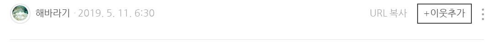
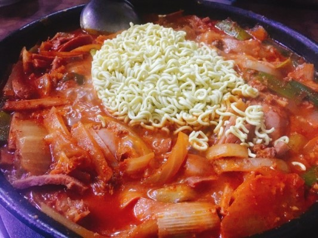

송탄하면 평택! 송탄하면 부대찌개!
유명한 #송탄부대찌개
그 중에서도 가장 유명한 #김네집부대찌개 를 먹으러 갔다.
국제시장 거리 골목길 안 쪽에 김네집이 있다.
가게 앞에 모여 있는 사람들
맛집을 가면 항상 있는 웨이팅...
그래도 대기 장소가 있어서
앉아서 기다릴 수 있었다.

무엇보다 다른 부대찌개집보다 월등한 점은
양이 정말 푸짐하다는 것이다.
밀가루 많이 섞인 햄을 싫어하는데
여기는 고기 식감도 좋고,
햄과 소세지, 고기가 정말 많았다.
둘이서 2인분을 시켰는데
이걸 다 먹을 수 있을까.. 걱정할 정도.
부대찌개 양이 너무 많지만..
그래도 부대찌개인데 라면을 포기할 수 없죠..
부대찌개를 먹다가 라면도 추가했다...